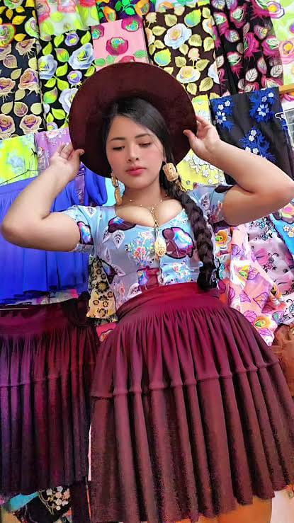
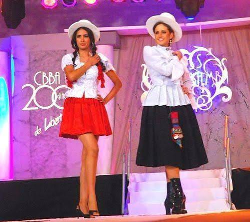
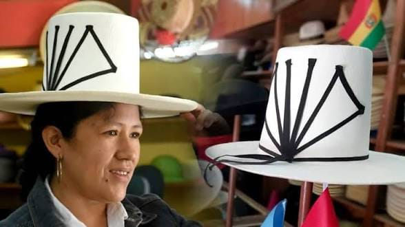
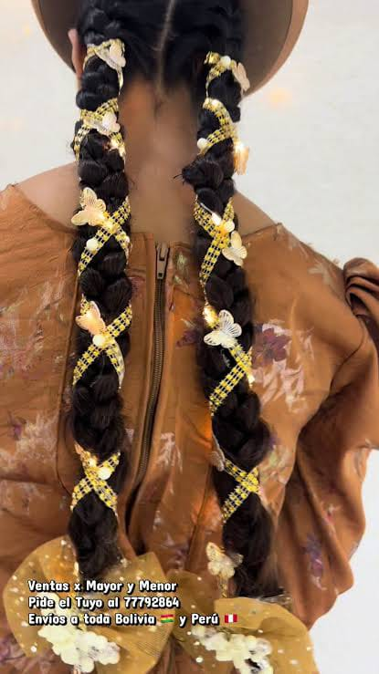
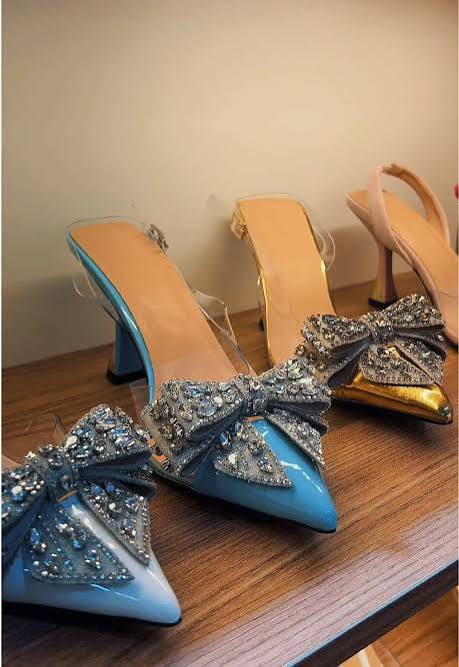

🌺 Vestimenta de la Chola Cochabambina 🌺
Tradición, elegancia e identidad cultural de Cochabamba.
La chola cochabambina es una figura representativa de la cultura de los valles. Su vestimenta tradicional se caracteriza por la combinación de polleras, blusas, mantas y el conocido sombrero tipo tarro. Cada prenda expresa costumbres, historia y una identidad cultural que continúa presente en Cochabamba.

1. Pollera
Es una falda amplia que puede tener varios pliegues y colores. Tradicionalmente se confeccionaba con telas elegantes y resistentes. Su movimiento y su forma son características importantes de la vestimenta de la mujer cochabambina.

2. Blusa
Generalmente complementa la pollera. Puede ser de colores claros y presentar bordados, encajes, cintas y otros detalles decorativos que aportan elegancia al conjunto.

3. Manta
Se coloca sobre los hombros y puede combinar con los colores de la pollera. Algunas mantas presentan bordados y flecos. Además de adornar la vestimenta, ayudan a proteger del frío.

4. Sombrero tipo tarro
Es uno de los elementos distintivos de la vestimenta tradicional de la chola cochabambina. Se caracteriza por su copa alta y su forma particular, que lo diferencia de otros sombreros tradicionales del país.

5. Trenzas y tullmas
El cabello tradicionalmente se llevaba en trenzas largas. En sus extremos se colocaban tullmas, que son adornos tejidos con hilos de diferentes colores y que completan el peinado.

6. Calzado
El calzado puede consistir en zapatos o zapatillas de medio taco. Su diseño y material varían según la época, la ocasión y las preferencias de cada mujer.
Las fotografías deben estar guardadas en la misma carpeta que este archivo HTML.